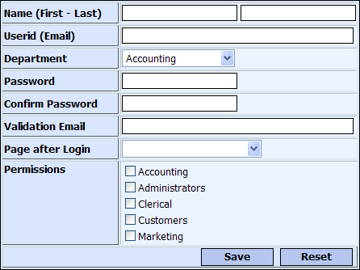

DLG_INTUSER Dialog Component
Purpose
The DLG_INTUSER dialog component is used by administrators to edit security information for internal users.

Description
The DLG_INTUSER dialog component contains the text controls necessary to edit a internal_users table record and a matching security record for the user, if a security record exists.
Control names for fields that contain data for the internal_users table are the same as the field names in the table. The name of each security control in the dialog must exactly match the name of the field in the user table. A list of valid security field names can be found by using the A5WS_User_File_Field_List() function. Two other fields are recognized by the security functions used in this component, confirm_password and groups. Confirm_password is used to confirm a password entry, and groups saves the security group assignments for this user.
There are three controls that have the control type set to "hidden". These controls are emp_id, guid, and ulink. These controls are required and hold values used in the events to find and save the correct records in the tables. The guid control is empty if there is no security record found for the user.
There are two email fields on the dialog. One is emp_email and displays the email saved in the internal_users table as a label. The other is email that is a validation email saved in the security table used to validate the users identity. These may have the same value or they may be different. The userid in this configuration is also an email address and it may match the values in the other email fields.
Containers
Notable Grid Control Property Settings
|
Control |
Property |
Description |
|
Merge Cell Properties > Row heading |
Set to "Name (First - Last) ". | |
|
Emp_Fname |
Control Settings > Validation rules |
General > Enable rules set to TRUE General > Require value set to TRUE |
|
Dept |
Control Settings > Control Type |
Set to "Dropdown". |
|
Control Settings > Validation rules |
General > Enable rules set to TRUE General > Require value set to TRUE | |
|
DropDownBox Properties > Choices |
Define Choices > List type is set to "Dynamic". Data Source > Data source type is set to "Variable". Data Source > Variable name is set to "deptlist". | |
|
Password |
Textbox Properties > MaxLength |
Set to "60" Must large enough to hold encrypted password. |
|
Textbox Properties > Is a password field |
Set to TRUE. | |
|
Row Properties > Security Groups |
Set to "Accounting, Administrators, Marketing". | |
|
Confirm_Password |
Textbox Properties > Is a password field |
Set to TRUE. |
|
Row Properties > Security Groups |
Set to "Accounting, Administrators, Marketing". | |
|
|
Row Properties > Bubble help text |
Set to "Email used to validate user and send lost data to user .". |
|
redirpage |
Control Settings > Control Type |
Set to "Dropdown". |
|
DropDownBox Properties > Choices |
Define Choices > List type is set to "Dynamic". Data Source > Data source type is set to "Variable". Data Source > Variable name is set to "pagelist". | |
|
Row Properties > Security Groups |
Set to "Accounting, Administrators, Marketing". | |
|
groups |
Control Settings > Control Type |
Set to "Checkbox". |
|
CheckBox Properties > Choices |
Define Choices > List type is set to "Dynamic". Data Source > Data source type is set to "Variable". Data Source > Variable name is set to "grouplist". | |
|
CheckBox Properties > Orientation |
Set to "Vertical" | |
|
Row Properties > Security Groups |
Set to "Accounting, Administrators, Marketing". |
Event Code
The Initialize event code finds user records from the internal_users table and security data and populates the controls. If the Request.variables.emp_id variable has a non-null value, the script uses this value to retrieve the corresponding record from the internal_users table. The variable value was passed form the previous page.
|
If eval_valid("Request.variables.emp_id ") ' Value passed to page - also used in 'ulink' if Request.variables.emp_id <> "" query.filter = "emp_id = \""+Request.variables.emp_id+"\"" ) ' find the record query.order = "" tbl = table.open("PathAlias.ADB_Path\internal_users.dbf") qdx = tbl.query_create() |
If the query finds a single record, the script writes the values from the fields of the internal_users record to the values in the dialog's controls.
|
if qdx.records_get() = 1 ' got one match CurrentForm.Controls.emp_Fname.value = alltrim(tbl.emp_Fname) CurrentForm.Controls.emp_Lname.value = alltrim(tbl.emp_Lname) CurrentForm.Controls.emp_id.value = alltrim(tbl.emp_id) CurrentForm.Controls.dept.value = alltrim(tbl.Dept) CurrentForm.Controls.ulink.value = alltrim(tbl.emp_id) tbl.close() |
The event code then re-populates the ulink control with the emp_id from the record found and uses that value to find a security record for the user. The value is placed in a request variable to pass to the A5WS_GET_USER_VALUES() function.
|
request.variables.ulink = alltrim(CurrentForm.Controls.emp_id.value) a5ws_get_user_values(CurrentForm,request) 'find security record by 'ulink' as we don't have 'GUID', do not use email as it can change else tbl.close() end if end if end if |
Finally, If the validation email control is empty, the userid may be placed in the control as a default value.
|
'set validation email address to same as userid if no email has been entered if alltrim(CurrentForm.Controls.userid.value) <> "" if alltrim(CurrentForm.Controls.email.value) = "" CurrentForm.Controls.email.value = alltrim(CurrentForm.Controls.userid.value) end if end if |
The Validate event code validates the security data entered, if any, and saves it if there are no errors. The function A5WS_SAVE_USER_VALUES()will return CurrentForm.Has_error = .t. if the data does not meet the security validation rules.
|
a5ws_save_user_values(CurrentForm,request) ' validate and save |
The AfterValidate event code starts by setting a Flag variable to designate if this is a new record. The event code then searches for a internal_users record that matches the emp_id control. This control would have a value if this is an existing record.
|
dim FlagNew as l = .T. if CurrentForm.Controls.emp_id.value <> "" ' indicates existing record (could also use any other known value) query.filter = "emp_Id= \""+alltrim(CurrentForm.Controls.emp_id.value)+"\"" query.order = "" tbl = table.open("PathAlias.ADB_Path\internal_users.dbf") qdx = tbl.query_create() |
If the query finds a single record, the script writes the values in the dialog's controls into the fields of the internal_users record. It sets the flag to FALSE to indicate this is an existing record.
|
if qdx.records_get() = 1 ' got one tbl.change_begin() tbl.emp_fname = alltrim(CurrentForm.Controls.emp_Fname.value) tbl.emp_lname = alltrim(CurrentForm.Controls.emp_Lname.value) tbl.email = alltrim(CurrentForm.Controls.userid.value) tbl.Dept = alltrim(CurrentForm.Controls.dept.value) tbl.change_end() FlagNew = .F. ' no need to resave security as 'ulink' was already used to find security record elseif qdx.records_get() > 1 FlagNew = .F. end if tbl.close() end if |
If the flag is TRUE, this is a new record and a new record is saved into the internal_users table. After the record is saved, but before the table is closed, the emp_id value for this new record is saved in a request variable. The security values are re-saved by the A5WS_SAVE_USER_VALUES() function to add this emp_id value to the security ulink field.
|
if FlagNew = .T. tbl = table.open("PathAlias.ADB_Path\internal_users.dbf") tbl.enter_begin() tbl.emp_fname = alltrim(CurrentForm.Controls.emp_Fname.value) tbl.emp_lname = alltrim(CurrentForm.Controls.emp_Lname.value) tbl.email = alltrim(CurrentForm.Controls.userid.value) tbl.Dept = alltrim(CurrentForm.Controls.dept.value) tbl.enter_end() request.variables.ulink = alltrim(tbl.emp_id) 'get new 'ulink' value tbl.close() a5ws_save_user_values(CurrentForm,request) ' resave security with new 'ulink' value end if |
The Finally, event code reloads the security values using the function A5WS_GET_USER_VALUES() to show the latest changes.
|
a5ws_get_user_values(CurrentForm,request) |
The Activate event code creates the variables needed for the dropdown and checkbox controls.
|
grouplist = a5ws_get_groups(request,.t.) 'Departments are built from security groups in this case 'remove 'customers' from list of groups deptlist = filter_string(grouplist,"Customers",crlf(),.T.) 'remove second word for each line, which is a group guid deptlist = *for_each(x,word(x,1,"|"),deptlist) 'create redirect page dropdown pagelist = a5ws_get_page_list(request) |
See Also